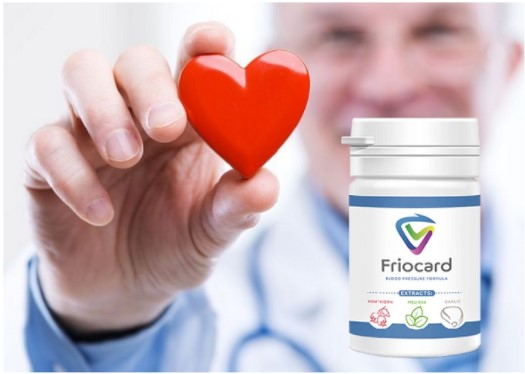

Vedci povedali, že stres v práci a nedostatok spánku sú nebezpečné pre pacientov s hypertenziou. 85% ľudí na Slovensku trpiacich hypertenziou zomiera na infarkt v dôsledku zlého spánku a stresu!
Máte hypertenziu? To znamená, že by ste mali mať dostatok spánku a nebyť nervózny kvôli práci. V opačnom prípade sa budete musieť vyrovnať s tým, že riziko úmrtia na kardiovaskulárne choroby sa pre Vás zvyšuje 3-krát. K tomuto záveru dospeli autori štúdie publikovanej v European Journal of Preventive Cardiology.
Spánok by mal byť časom oddychu, relaxu a načerpania nových síl. Ak ste v strese v práci, spánok by mal Vám pomôcť, aby ste sa uvoľnili. Žiaľ, zlý spánok a stres v práci idú často ruka v ruke a hypertenzia tento efekt ešte zhoršuje, uviedol hlavný autor štúdie profesor Karl-Heinz Ladwig z Technickej univerzity v Mníchove.
Hypertenzia postihuje asi tretinu celej pracujúcej populácie. Účastníkmi experimentu bolo 1959 hypertonikov vo veku 25 až 65 rokov. Sledovali ich 18 rokov. Po tomto období sa ukázalo, že dobrovoľníci s „nervóznou“ prácou zomierali na kardiovaskulárne ochorenia 1,6-krát častejšie. Ľudia, ktorí zle spali, no neprežívali stres, mali úmrtnosť 1,8-krát vyššiu. Ak sa oba faktory zhodovali, riziko predčasnej smrti sa zvýšilo trojnásobne. Pod stresom v práci vedci myslia zvýšené nároky na zamestnancov zo strany vedenia.
Negatívne účinky stresu sa však môžu rokmi nahromadiť. Riziko nespočíva v tom, že ste mali jeden ťažký deň v práci a potom ste nemohli zaspať. Človek dlhé roky trpí stresom a zlým spánkom a to mu vyčerpáva zdroje a môže viesť k predčasnej smrti, komentoval profesor Ladwig.
K problému sa vyjadruje kardiológ, profesor, primár oddelenia chorôb myokardu a srdcového zlyhávania MUDr. Miroslav Lakomý
Stresová situácia spúšťa v organizme množstvo procesov, ktorých úlohou je podporovať telo v ťažkých podmienkach. Množstvo adrenalínu v našej krvi sa zvyšuje, srdce začína pracovať v posilnenom režime, zásobujú sa rezervné zdroje energie.
Počet mastných kyselín a cholesterolu v krvi, jeho viskozita sa zvyšuje, dochádza k vazospazmom. Vysoká hladina cholesterolu vedie k zúženiu tepien, pretože sa ukladá na stenách ciev. Výsledkom je, že človek v anamnéze získa aterosklerózu, kvôli ktorej je srdce zle zásobené krvou, a preto nedostáva dostatok kyslíka a živín na normálnu činnosť. Preto po silnom alebo dlhotrvajúcom strese každého druhého pacienta bolí srdce.
Taktiež silný stres vedie k zvýšeným krvným zrazeninám a arteriálnej hypertenzii. Krvná zrazenina, ktorá skončí v nesprávny čas na nesprávnom mieste, môže okamžite viesť k smrti. Arteriálna hypertenzia (vysoký krvný tlak) sa v budúcnosti stáva vynikajúcou živnou pôdou pre mŕtvicu.
Stres je neodmysliteľným „spoločníkom“ plnohodnotného života človeka v metropole, ktorý sa snaží realizovať vo všetkých sférach života. Pacienti s vysokým krvným tlakom, ktorý môže byť spôsobený stresom, musia zvoliť správnu liečbu.
Ale aj na pozadí užívania liekov je možné prudké neočakávané zvýšenie krvného tlaku a rozvoj hypertenznej krízy. Je dôležité poskytnúť pomoc včas.
Najprv si vezmite požadovaný liek sami. V dôsledku toho po 20 minútach po užití by sa mal tlak znížiť o 20-25%. Teraz existujú lieky, ktoré „jemne“ a účinne znižujú krvný tlak. Ide o prostriedky „prvej pomoci“ pre väčšinu hypertonikov, ktoré je žiaduce mať po ruke v domácej lekárničke.
Na obnovenie práce kardiovaskulárneho systému a zníženie tlaku na vekovú normu bez nútenej vazodilatácie odporúčam použiť novú generáciu Friocard. Prípravok je absolútne bezpečný, nemá žiadne vedľajšie účinky a môže sa užívať bez dozoru lekára.
Friocard funguje v 3 stupňoch:
- 1. Odstraňuje úzkosť, úzkosť, strach, vnútorný emočný stres, potenie, búšenie srdca, pocit nedostatku vzduchu
- 2. Úplne alebo výrazne sa zmiernia ochorenia ako hypertenzia, bolesti hlavy, kŕčové žily, trombóza. Tinnitus, závraty, opuchy miznú, zlepšuje sa zraková ostrosť a jasnosť myslenia. Hmotnosť a metabolizmus tukov sú normalizované.
- 3. Zvyšuje pevnosť a elasticitu stien ciev. To zabraňuje tvorbe nových plakov a 11-krát znižuje riziko mŕtvice.
Friocard efekt NIE JE sprevádzaný svalovou relaxáciou, ospalosťou a nedostatkom koordinácie, neznižuje duševnú a fyzickú aktivitu, preto je možné ho použiť počas pracovného dňa alebo štúdia.
Kapsuly Friocard sa môžu kombinovať s akýmkoľvek liekom. Žiadna závislosť, závislosť a abstinenčné príznaky. Friocard sa vyznačuje rýchlym účinkom: maximálna koncentrácia v krvi po 20 minútach. Liek nie je toxický, možno ho kombinovať s inými liekmi.
Pre distribúciu Friocard sme vytvorili špeciálne oddelenie, ktoré sa zaoberá spracovaním žiadostí. Každý, kto chce dostať Friocard s doručením, musíte poskytnúť svoje meno a kontaktné údaje. Následne Vás bude kontaktovať konzultant a dohodne sa na vhodnej lehote dodania. Snažili sme sa urobiť všetko čo najjednoduchšie, aby sa k lieku dostal každý, aj keď ste si predtým na internete nič neobjednali.
Friocard distribuujeme už 2 mesiace. Za tento čas sme dostali veľa ďakovných listov od ľudí trpiacich vysokým krvným tlakom. To opäť dokazuje, že VÝROBOK V ZIME NAOZAJ ÚSPEŠNE POMÁHA HYPERTENZIKE BEZ RIZIKA INFARKTU A MŔTVICE!
Špeciálne pre našich čitateľov uverejňujeme objednávkový formulár Friocard

PRE OBJEDNÁVKU FRIOCARD ZADAJTE ÚDAJE NIŽŠIE:
Špeciálna ponuka platí do koniec dňa 09.11.2021
KOMENTÁRE:
Vladimír Mlynský
Neustále čelím stresu v práci a trpím tlakovými skokmi. Článok je veľmi zaujímavý, ani som si nemyslel, že stres a nedostatok spánku tak silno ovplyvňujú ľudský organizmus.
Anička Andulka
Hypertenzia nie je príjemná choroba. Neustále užívam rôzne antihypertenzíva a nedávno som prešla na Friocard: raz som sa rozhodla, že si ho kúpim a okamžite sa mi to zapáčilo. Liek funguje, tlak sa udržiava v norme veľmi dobre, beriem jednu tabletku ráno a počas dňa, ak sa nevystavujem zbytočnému stresu, všetko sa udržiava v norme.
Zuzana Kušniráková
Úprimne povedané, vynikajúci liek! Objednala som si ho hneď, ako som si prečítala tento článok. Keď som dostala Friocard, okamžite som ho začala brať. Hneď v ten večer si všimla zlepšenie zdravotného stavu. Tlak sa vrátil do normálu. A nie normálne pre mňa ako hypertonika, ale normálne ako pre bežného zdravého človeka. Stav po odbere je jednoducho úžasný. Pribudli sily a zlepšil sa spánok.
Stanislav Handzuš
Nikdy som o tomto lieku nepočul, ale chcem skúsiť zadať objednávku.
Jozef Mikus
Pol roka žijem v strese nakoľko večer manželke stúpa tlak. Zakaždým, keď voláme sanitku a modlíme sa, aby stihli doraziť... Pred týždňom sme si objednali Friocard a stal sa zázrak! V prvý deň sa manželkin krvný tlak nezvýšil. Konečne vidím na jej tvári úsmev. Ďakujem za tento liek!
Estera Mikušová
Mamu minulý mesiac odviezli sanitkou v predinfarktovom stave. Lekári povedali, že za všetko môžu tlakové skoky. Odvtedy neustále uživala tabletky, bola celý čas nervózna a merala si tlak 30-krát denne... Na normálny život jednoducho nemála čas! Sme pripravení kúpiť tento liek za akékoľvek peniaze, ak by to malo účinok a pomohol mame!!!
Janka Pčolová
Potvrdzujem každé slovo nakoľko Friocard je vynikajúci liek, jeden z najúspornejších a najúčinnejších liekov!
Peter Kriška
Mám artériovú hypertenziu, aj srdcovú nedostatočnosť a musím neustále brať lieky. Friocard je môj záchranca, nosím ho stále so sebou, pomáha mi rýchlo znížiť vysoký krvný tlak a zbaviť sa stresu zo srdca. Liek je lacný, pomáha pomerne rýchlo, doslova za 5 minút bolesť hlavy už zmizne.
Stefan Diabelko
Friocard je momentálne moj obľúbený liek. Mal som možnosť na sebe experimentovať a vyskúšať veľa rôznych liekov na vysoký krvný tlak. Niečo vôbec nepomohlo, ale niečo zrazilo tlak, takže už nebola žiadna sila. A s týmto liekom je všetko super. Pôsobí rýchlo, s výsledkom som spokojný
Darina Belianska
Ďakujeme za skvelé správy! Všetci hypertonici si budú môcť prečítať a dozvedieť sa niečo nové o liečbe.